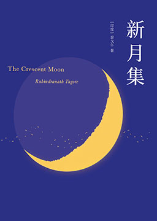
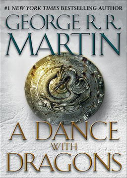

双语小说
收录中英文双语小说300多部，包括世界经典名著、社会小说、悬疑小说等短篇和长篇小说，可按照初中难度、高中难度和大学难度分类阅读，每部小说都有分段中英文对照，点击单词可查看中文翻译。

飘 (Gone with the Wind)
作者：玛格丽特·米切尔 (Margaret Mitchell) [美国]
美国作家玛格丽特·米切尔创作的长篇小说，该作1937年获得普利策文学奖。小说以亚特兰大以及附近的一个种植园为故事场景，描绘了内战前后美国南方人的生活。作品刻画了那个时代的许多南方人的形象，占中心位置的斯嘉丽、瑞德、艾希礼、梅兰妮等人是其中的典型代表。他们的习俗礼仪、言行举止、精神观念、政治态度，通过对斯嘉丽·奥哈拉与白瑞德的爱情纠缠为主线，成功地再现了林肯时期的南北战争以及美国南方地区的社会生活。内容简介：1861年南北战争爆发的前夕，塔拉庄园的千金小姐郝思嘉爱上了另一庄园主的儿子艾希利，但艾希利却选择了郝思嘉的表妹，温柔善良的韩媚兰为终身伴侣。郝思嘉出于妒恨，抢先嫁给了韩媚 兰的弟弟查尔斯。不久，美国南北战争爆发了。艾希利和查尔斯作 为征兵上了前线。查尔斯很快就在战争中死去了。郝思嘉成了寡妇， 但她内心却一直热恋着艾希利。
彼得·潘 (Peter Pan)
作者：詹姆斯·马修·巴利 (James Matthew Barrie) [苏格兰]
达林先生家里的三个小孩，经受不住由空中飞来的神秘野孩子彼得·潘的诱惑，很快也学会了飞行，趁父母不在，连夜飞出窗去，飞向奇异的“梦幻岛”。这岛上既有凶猛的野兽，又有原始部落中的“红人”，还有可怕的海盗，当然还有仙女和美人鱼，总之，经常出现在儿童梦中和幻想中的一切，这里都有；因此也就有与猛兽搏斗的打猎，有红人与海盗之间或孩子们与海盗之间的真正的战争。孩子们脱离了成人，无拘无束，自由自在，在彼得·潘的率领下，自己处理一切事务，尽情玩耍，也历经了各种危险。正如作者在书中所说：“在他们看来，没有妈妈照样可以过得很愉快。只有当妈妈的才认为，孩子离开了妈妈便不能生活。”可是后来，这些离家出走的孩子，尤其是其中的大姐姐温迪，开始想妈妈了，在她的动员下，孩子们告别了给他们带来过无限欢乐的“梦幻岛”，飞回了家中。后来他们都长成了大人。只有彼得·潘永不长大，也永不回家，他老在外面飞来飞去，把一代又一代的孩子带离家庭，让他们到“梦幻岛”上去享受自由自在的童年欢乐。作品的最后一句是这样写的：“只要孩子们是欢乐的、天真的、无忧无虑的，他们就可以飞向梦幻岛去。”
喧哗与骚动 (The Sound And The Fury)
作者：威廉·福克纳 (William Faulkner) [美国]
该小说讲述的是南方没落地主康普生一家的家族悲剧。老康普生游手好闲、嗜酒贪杯。其妻自私冷酷、怨天尤人。长子昆丁绝望地抱住南方所谓的旧传统不放，因妹妹凯蒂风流成性、有辱南方淑女身份而爱恨交加，竟至溺水自杀。次子杰生冷酷贪婪，三子班吉则是个白痴，三十三岁时只有三岁小儿的智能。全通过这三个儿子的内心独白，围绕凯蒂的堕落展开，最后则由黑人女佣迪尔西对前三部分的“有限视角”做一补充。该作品采用了多角度的叙述方法。
我的生活 (The Story of My Life)
作者：海伦·凯勒 (Helen Keller) [美国]
《我的生活》是海伦·凯勒的处女作。作品一发表；立即在美国引起了轰动，被称为“世界文学史上无与伦比的杰作”，出版的版本超过百余种，在世界上产生了巨大的影响。本书由海伦·凯勒的《我的生活》《走出黑暗》《老师》三本书以及发表在美国《大西洋月刊》上的著名散文《假如给我三天光明》编译而成，完整系统地介绍了海伦·凯勒丰富、生动、真实而伟大的一生，许多文字还是第一次与中国读者见面。
新月集 (The Crescent Moon)
作者：拉宾德拉纳特·泰戈尔 (Rabindranath Tagore) [印度]
诗人书写了孩子纯净的心灵。孩子们喜欢玩简单的小游戏，且乐此不疲。“他们用沙子建造房屋，他们用空贝壳游戏。”“孩子，你多么快乐，整个早晨坐在尘土里，玩着一根折断的小树枝。”孩子们有着奇妙的想象，“如果我闹着玩儿，变成一朵金香木花，长在那树的高枝上，在风中笑得摇摇摆摆，在新生嫩叶上跳舞，妈妈，你认得出是我吗？”此外，《新月集》也描写了孩子和母亲的感情。“他知道慈母心中小小一角就可以容纳无穷的欢乐，被母亲逮住了紧抱在她慈爱的双臂里，远比自由甜蜜。”在诗人的笔下，诗中的母亲带有一种圣洁的光辉。
冰与火之歌5: 魔龙的狂舞 (A Dance with Dragons)
作者：乔治·雷蒙德·理查德·马丁 (George Raymond Richard Martin) [美国]
故事与卷四《群鸦的盛宴》同步进行，主要讲述在火龙重新现世的同时众人的经历。史坦尼斯·拜拉席恩开始在北境和波顿家族进行对抗，假意臣服铁王座的北境封臣则开始了暗下运作，而受尽折辱的席恩·葛雷乔伊则在自我内心苦苦挣扎。新官上任的琼恩·雪诺为了大局，不得不做出一系列颇有争议的决定，导致部下不满，也置自己于险境。逃亡到厄索斯的提利昂·兰尼斯特流离失所，意图投奔征服了奴隶湾的丹妮莉丝·坦格利安却落了个被劫持奴役的下场。而丹妮莉丝面临瘟疫、战争和内乱多重压力，她的女王宝座也暗箭难防，如履薄冰。一位号称是伊耿·坦格利安六世的年轻男子，在重出江湖的琼恩·克林顿和一万黄金勇士的拥立下从东方杀入维斯特洛攻城略地，与此同时的君临城政局却发生了剧变……
冰与火之歌4: 群鸦的盛宴 (A Feast Of Crows)
作者：乔治·雷蒙德·理查德·马丁 (George Raymond Richard Martin) [英国]
随着五王之战告一段落，太后瑟曦·兰尼斯特很快就和年轻的新王后玛格丽·提利尔发生权利暗斗，兰尼斯特和提利尔的联盟开始瓦解，铁王座的负债累累也使得瑟曦做出了放任教会势力扩张的武断决定。与此同时，塔斯的布蕾妮受詹姆·兰尼斯特之托开始寻找失踪的史塔克女儿，而“小指头”培提尔·贝里席则在谷地开始他的一系列阴谋。五王之战中一直置身事外的多恩启动了潜伏多年的复仇计划，铁群岛的权力形势也发生了决定性的变化。在北方，新当重任的琼恩·雪诺则强行派遣自己的好友山姆威尔·塔利陪同伊蒙·坦格利安学士去进修，而山姆路上的听闻则向学城的马尔温博士证明了魔法的归来……
冰与火之歌3: 冰雨的风暴 (A Storm Of Swords)
作者：乔治·雷蒙德·理查德·马丁 (George Raymond Richard Martin) [美国]
随着铁民乘乱入侵、临冬城被毁，在南方征战的少狼主罗柏·史塔克虽然攻无不克，但却一步步正输掉战争，然而最致命的威胁不是来自战略上的失利，却是红色婚礼上盟友的背叛。随着北境之王的坠落，史塔克家族的孩子们四散各地无家可归，开始了风雨飘泊的生存历程。而获得了提利尔家族联盟的兰尼斯特家族虽然成了内战的赢家，却仍然在内斗与暗斗中遭受极大的损失。与此同时，北疆的守夜人因为塞外远征失利陷入危机，琼恩·雪诺在逆境中逐渐脱胎换骨走向成年，命运开始对他委以重任。而东方的丹妮莉丝·坦格利安则开始了自己由流浪失势的破落贵族蜕变成为女王统治者的征途。
冰与火之歌2: 列王的纷争 (A Clash Of Kings)
作者：乔治·雷蒙德·理查德·马丁 (George Raymond Richard Martin) [美国]
国王劳勃死后，艾德公爵因政治斗争失败送命，太子乔佛里登上铁王座。艾德的长子罗柏·史塔克为父报仇挥兵南下自立为王，公开和铁王座决裂。然而乔佛里的身份秘密被曝光，他的两个王叔为争王位先后起兵反叛，西面的铁群岛也开始蠢蠢欲动，一时间维斯特洛群雄纷起，战争冲突一触即发，五方势力僭越称王。诸王之争会像红色彗星的色泽一般血红，象征着浩劫的即将降临。与此同时，北疆的绝境长城危机四伏，加入守夜人的艾德私生子琼恩·雪诺不得不被迫做出抉择。而在东方大陆的丹妮莉丝·坦格利安虽然意外重新孵出火龙，但却失去了丈夫和部落，不得不带领族人艰难的奋斗。
冰与火之歌1: 权力的游戏 (A Game Of Thrones)
作者：乔治·雷蒙德·理查德·马丁 (George Raymond Richard Martin) [美国]
七大王国各方势力在首都君临城为掌控权力而进行的政治斗争。故事由伊耿历297年因国王之手琼恩·艾林公爵突然过世，七国之王劳勃·拜拉席恩不远千里亲自北上来到北境首府临冬城邀请挚友艾德·史塔克公爵出山开始。同时一封密信的到来，使得本无心参与南方政治的艾德不得不放弃和妻儿与世无争的生活，南下继任并调查前任首相艾林之死。然而嫌疑指向了出身七国首富豪族的王后瑟曦·兰尼斯特，同时太子乔佛里·拜拉席恩继承权的黑幕也渐渐浮出，最终引发了史塔克家族和兰尼斯特家族两方势力的对抗。为了帮助挚友劳勃国王，艾德被迫赌上身家性命投入这一场宫廷的漩涡中。与此同时，东方厄索斯大陆上的前朝坦格利安家族余脉为了重夺政权，和游牧民族多斯拉克部落联姻。